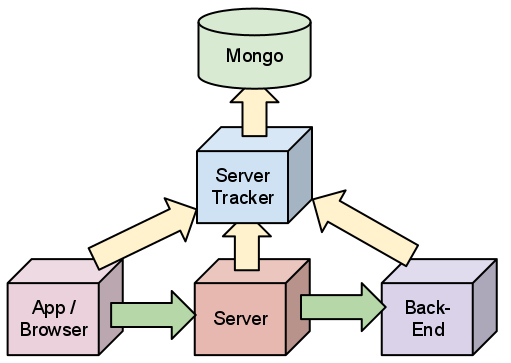

server-tracker

The server-tracker collects information about user- and system-behavior throughout very small as well as very large system. For modern web- or mobile-applications this tool can collect information from browsers, native applications, servers, database, etc and correlate to provide a holistic view of system- and user-behavior.
Install
In order to be able to install and execute the server-tracker, one must have
both node.js and npm installed. There are many ways
to get these two products install. One of them is to install them using nvm
git clone git://github.com/creationix/nvm.git ~/.nvm
. ~/.nvm/nvm.sh
nvm install v0.4.12
nvm alias default v0.4.12 For this to work one obviously need git as well as a compiler
and other build essentials. The nvm page is one of the sources
that explain how to install these problems. Once node.js and
npm are availabe, the tracker can be installed using:
npm install server-tracker --mongodb:native By default, the tracker looks for a configuration file called
${HOME}/.server-tracker.json. This file has to contain valid json
that identifies the replication set to use, as in:
{
"listenPort": 3080,
"mongo": {
"replica-set": [
{
"server": "mongo00.jolira.com",
"port": 27017
},
{
"server": "mongo01.jolira.com",
"port": 27017
},
{
"server": "mongo02.jolira.com",
"port": 27017
}
],
"database": "mobile-app",
"indices": {
"measurements": []
}
},
"seeds": [
{
"server": "tracker00.jolira.com",
"port": 3080
},
{
"server": "tracker01.jolira.com",
"port": 3080
},
{
"server": "tracker02.jolira.com",
"port": 3080
}
]
}The startup process fails unless the tracker can connect to a mongo instance
on the local server. Configuration data is loaded from there. In order to
connect to a different instance, one has to start the server tracker directly
using: npm start server-tracker
License
Copyright (c) 2011 jolira
Permission is hereby granted, free of charge, to any person obtaining a
copy of this software and associated documentation files (the "Software"),
to deal in the Software without restriction, including without limitation
the rights to use, copy, modify, merge, publish, distribute, sublicense,
and/or sell copies of the Software, and to permit persons to whom the
Software is furnished to do so, subject to the following conditions:
The above copyright notice and this permission notice shall be included in
all copies or substantial portions of the Software.
THE SOFTWARE IS PROVIDED "AS IS", WITHOUT WARRANTY OF ANY KIND, EXPRESS OR
IMPLIED, INCLUDING BUT NOT LIMITED TO THE WARRANTIES OF MERCHANTABILITY,
FITNESS FOR A PARTICULAR PURPOSE AND NONINFRINGEMENT. IN NO EVENT SHALL
THE AUTHORS OR COPYRIGHT HOLDERS BE LIABLE FOR ANY CLAIM, DAMAGES OR OTHER
LIABILITY, WHETHER IN AN ACTION OF CONTRACT, TORT OR OTHERWISE, ARISING
FROM, OUT OF OR IN CONNECTION WITH THE SOFTWARE OR THE USE OR OTHER
DEALINGS IN THE SOFTWARE.Authors
Jolira Development <dev@jolira.com>
Download


Github Repo: http://github.com/jolira/server-tracker
$ git clone git://github.com/jolira/server-tracker